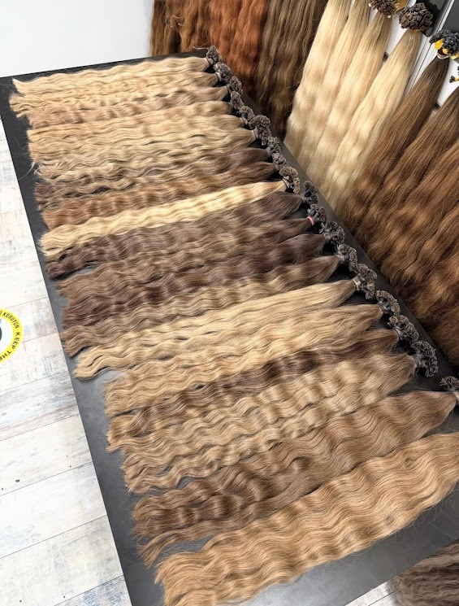
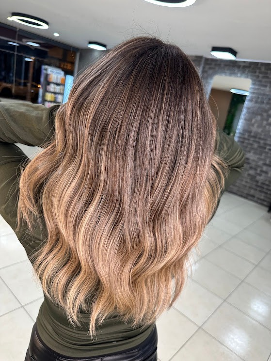

Her kadının saç anatomisi, yoğunluğu ve geçmiş boya tecrübesi kendine hastır. LOCCA stüdyosunda standart reçeteler değil, kişiye özel saç mimarisi uygulanır.

Saçınızın yapısına, yoğunluğuna ve rengine en uygun %100 doğal saçları seçiyoruz. İtalyan nano keratin kapsüllerle saç diplerinize çok ince tutamlar halinde uyguluyoruz. Bağlantı noktaları hissedilmeyecek kadar küçük olduğu için saçınızı topladığınızda veya atkuyruğu yaptığınızda asla görünmez.
Piyasadaki ağır ve saçı koparan kaynakların aksine, kendi saçınızın nefes almasını ve sağlıklı uzamasını sağlıyoruz. Çıkarma işleminde de saça zarar vermeyen özel solüsyonlar kullanıyoruz.
Tek seansta saçı yakarak açmak yerine, kademeli açma protokolü uyguluyoruz. Bağ koruyucu (bond builder) bakım açıcılar kullanarak saç telinin elastikiyetini koruyoruz. Dipten uca çizgisiz ve doğal geçişli sarı tonları yakalıyoruz.
Sarı saç yapmak kolaydır, ancak saçı yakmadan ve canlılığını kaybettirmeden açmak ustalık gerektirir. Turunculaşmayan, ipeksi ve kristal soğuk tonlar için her saçın geçmiş işlem durumuna göre özel formül hazırlıyoruz.


Saçın ana zemin rengini bozmadan, güneşten doğal olarak açılmış hissi veren çok ince ışıltı tutamları yerleştiriyoruz. Yüz hatlarınızı aydınlatacak stratejik noktalara hafif tonlamalar uyguluyoruz.
Sürekli dip boyası yaptırmak istemeyen, saçında zahmetsiz ve doğal bir parlaklık arayan kadınlar için en ideal uygulamamızdır. Aylarca ilk günkü doğallığını korur.
Yıpranmış, nemini kaybetmiş ve matlaşmış saç tellerine yoğun keratin ve nem yüklemesi yapıyoruz. Isı ile saçın en derin korteks tabakasına hapsedilen bakım sayesinde kırık uçları toparlıyoruz.
Dışarıdan sürülen geçici yağlar yerine saçın iç yapısını onarıyoruz. Fönün günlerce bozulmadan kalmasını ve saçın tararken ipek gibi akmasını sağlıyoruz.

Size en uygun seansı belirlemek için salon sahibimiz Yunus Soner ile yüz yüze veya telefonla görüşebilirsiniz.